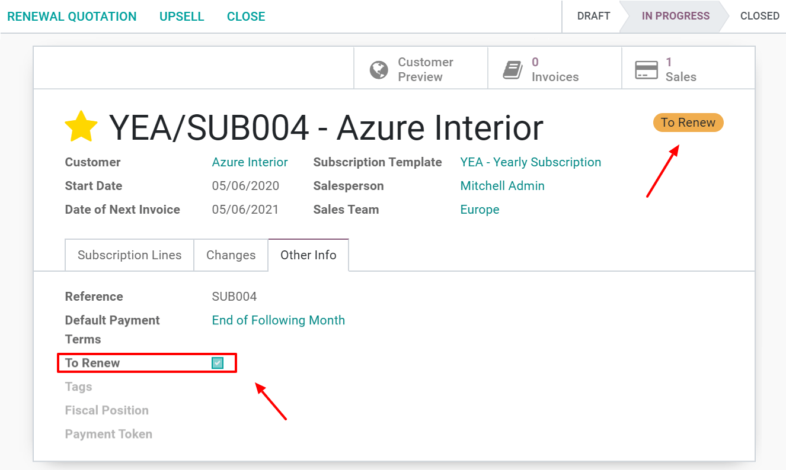
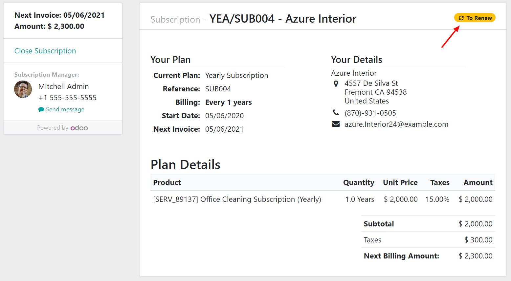
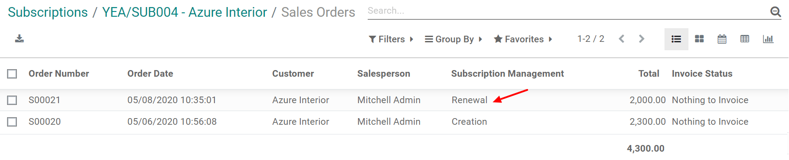

Renew a subscription¶
The key feature of a subscription business model is the recurring nature of payments. In this model, customers pay a recurring amount in exchange for access to a product or a service.
Each subscriber experiences this renewal process monthly, annually, or sometimes more, depending on the duration of the contract. Most subscription companies choose to automate their renewal processes but, in some cases, manual subscription renewals are still the preferred option.
With Odoo Subscriptions, you can have all your subscriptions in one application, suggest an automatic subscription renewal to your customers (as well as a manual one) and, finally, filter all your subscriptions and easily find those to renew (with the help of the tag To renew).
Renew your first subscription¶
Before renewing a subscription, be sure to check out our documentation on how to Create a quotation using subscription products. Indeed, once confirmed, a quotation becomes a sales order and a new subscription is automatically created. Therefore, this subscription has the status In progress. From there, you have the possibility to renew the subscription. In the Other Info tab, underneath the To Renew section, you can activate the To renew option. When activated, a yellow tag automatically appears in the upper right corner of the subscription.
Important
The To renew tag is automatically ticked when a payment fails. This indicator also appears on the customer portal. To visualize that, you just have to click on the Customer preview button. The tag To renew appears on the top right corner.
When a subscription needs to be renewed, you have the possibility to use a new button called Renewal quotation. By clicking on it, a new quotation is created. From there, start a basic sales flow allowing you to send the quotation by email to your customers or to confirm it. It is better to first Send by email the quotation to your customers in order to have their confirmation and, then, Confirm it in Odoo Sales.
Note
In the Chatter of this new quotation, it is mentioned that “This renewal order has been created from the previous subscription”. Once confirmed by your customers, this quotation becomes a sales order and a new sale is mentioned in the upper right corner of the subscription.

By clicking on the Sales button, you have a summary of your sales orders in a list view. The only difference between your two quotations is the description underneath the Subscription Management category. There, you can easily visualize which one is your renewal.
Visualize your subscriptions to renew¶
Finally, if you want to visualize all your subscriptions and easily find those to renew, you can go to your Subscriptions dashboard and use the filter To renew.